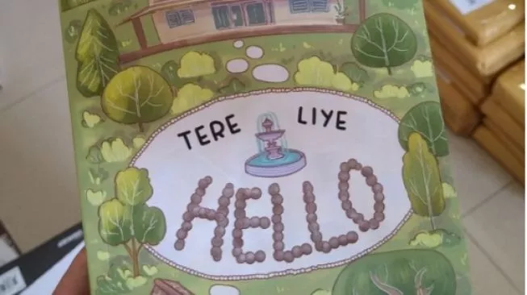

Hello: Novel Terbaru Tere Liye Tentang Cinta Beda Status Sosial

Benarkah cinta sejati akan menemukan 'rumah'nya sendiri? Sebuah kisah cinta terhalang restu orang tua yang diceritakan secara unik oleh Tere Liye tertuang dalam novel yang berjudul 'Hello' ini.
Identitas Buku
Judul Buku: Hello
Penulis: Tere Liye
Penerbit: SABAKGRIP
Jumlah Halaman: 320 Halaman
Ulasan Buku
Hello merupakan novel terbaru yang diterbitkan oleh Tere Liye. Mengangkat tema yang cukup unik, tentang cinta antara dua anak manusia yang telah bersama sejak masih bayi.
Hesty dan Tigor. Keduanya lahir ke dunia di detik yang hampir bersamaan. Tinggal dalam satu lingkungan yang sama, tetapi dengan 'kasta' dan tingkat sosial yang sama sekali berbeda.
Orang tua Tigor adalah pembantu dan sopir untuk keluarga Hesty. Hidup keduanya bagaikan langit dan bumi.
Hesty mendapatkan segalanya yang terbaik, mulai dari pendidikan sampai makanan, sedangkan Tigor hidup sederhana di bangunan tambahan di belakang rumah mewah Hesty yang khusus diperuntukkan untuk tempat tinggal pembantu.
Cerita ini disampaikan dengan gaya penulisan yang cukup unik.
Jika biasanya tokoh utama mengambil peran sentral dan bercerita langsung atau diceritakan sendiri oleh penulis, di cerita ini pembaca justru diajak untuk mengikuti kisah Hesty dan Tigor dari tokoh lain yaitu Ana.
Ana adalah seorang arsitek hebat yang keahliannya sudah diakui banyak orang. Ia diminta untuk merenovasi sebuah rumah tua. Dari sana lah ia mengetahui sebuah rahasia besar yang ternyata juga melibatkan masa lalu Paman Nomor Satunya.
Ada banyak sekali lika-liku yang dialami oleh para tokoh.
Pembaca seperti diajak ikut menapaktilasi kehidupan Hesty dan Tigor di rumah dua lantai itu. Tentang persahabatan mereka, perasaan yang mulai muncul, hingga penolakan dari ayah Hesty yang tidak merestui hubungan anaknya dengan Tigor karena perbedaan status sosial.
Pesan moral yang bisa diambil adalah cinta akan menemukan rumahnya sendiri, meski perlu waktu yang tidak singkat dan pengorbanan perasaan yang rumit.
Kesalahpahaman memegang peran yang sangat sentral di cerita ini. Andai saja Hesty dan Tigor sama-sama mengkonfirmasi apa yang mereka lihat, mungkin mereka tidak perlu menunggu waktu lama untuk bisa bersama. Tapi, waktu memang memegang rahasia sendiri yang tidak bisa diinterupsi oleh siapapun.